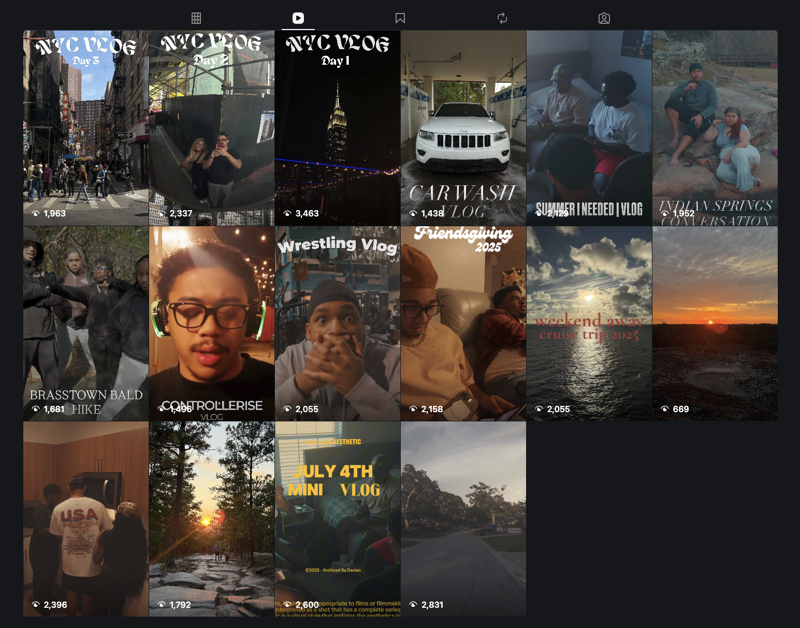

Video conent is one of the main ways I express my creativity. I create YouTube videos centered around experiences like trips, events, and moments with friends while trying to make each video entertaining and visually interesting. Putting a heavy focus on cinematic concepts and styles in a new form of vlogging in which I am aiming for.
After completing a longer video, I also create shorter promotional videos for my other social media platforms such as Instagram and Tiktok. This usually invloves selecting some of the best moments from the full video and editing them into a shorter format that captures attention, essentially a trailer.
Creating short form content gives me another way to promote my YouTube videos while also experimenting with different editing styles, music and pacing. Overall, allowing me to present my content to different audiences.
| Home | | Video Content | | Graphic Designs |